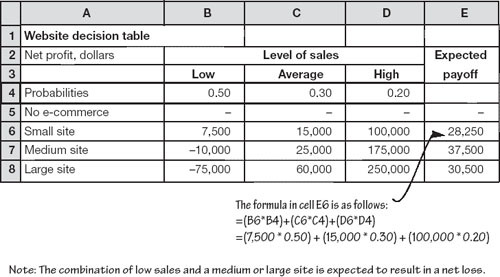
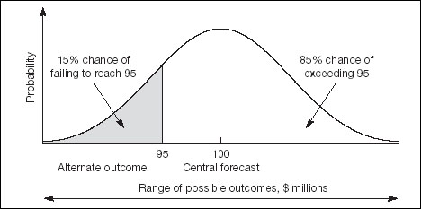

You will frequently have to choose between competing options when you do not have all the facts, when the outcomes are uncertain, and sometimes when you cannot even quantify any or all of the forces in play. Start by considering three decision-making techniques: Plusses and minuses for situations which are hard to quantify, expected payoff for making decisions under risk, and the use of the normal distribution for quantifying risk.
One way to analyse the factors that are hard to quantify is to use a plusses, minuses, interesting ideas (PMI) table. For example, you have in front of you a proposal to rework your company’s website. Assume that it is a brochure site with no e-commerce benefits. You could draw up a little spreadsheet as follows, in which you create three lists of benefits, negatives and interesting points. You give each entry a subjective score on a scale of, say, −10 to +10. Note that there is not necessarily any direct association between the entries on any one row.
Normally, of course, there would be many more rows. I have just used two to show the broad idea. The scoring helps you assess the relative importance of each factor and the overall rating of the project. The range of possible overall scores will be ± (10 × 2 rows) = ±20. A relatively large positive figure, as here, indicates a ‘go’. A negative result suggests caution.
Note that this technique was documented by Edward de Bono. His six thinking hats, although not a numerical technique, is interesting.
Now we should move on to consider decision-making under risk – a situation where various possible outcomes can be quantified. Essentially, you estimate the likelihood of various outcomes and choose the one with the highest expected payoff. Let me give an example.
Suppose that the new website discussed above could have an e-commerce angle. You do not have any direct experience of Internet sales through your existing site, so you are not confident about the likely outcome. However, this does not stop you running the numbers and making a range of estimates.
Assume that you have four options (a site with a few test products for sale, a medium-size site, and a large catalogue site, or, of course, a site with no e-commerce angle). For simplicity, we will work with three possible levels of sales (low, average or high). By estimating the costs associated with developing, hosting, managing and promoting each size site, the numbers of hits and the proportions that will turn into sales, the net revenue from sales, and so on, we can arrive at the estimated net profit or loss associated with each option. These figures are shown in the body of the following table.
Row 4 shows the probabilities (expressed as proportions) that might be associated with each level of sales. For example, you might cautiously project a 50% chance of low sales, and only a 20% possibility of high sales. The right-hand column (column E) shows the expected payoff for each option. These expected payoffs are weighted averages of the rows, calculated as shown below the table.
‘Is it better to have enough ideas for some of them to be wrong, than to be always right by having no ideas at all.’
—Edward de Bono
In principle, you select the option with the highest expected payoff – a medium-size site in this example. However, as you can see, the expected payoffs are very closely matched. My first instinct is to suggest opting for the small site for a couple of reasons. In absolute money terms, the expected payoff from the small site is not that different from the payoff from the medium site. Moreover, on these figures, there is a 50% likelihood that the medium site will make a loss. And, of course, it is often better to move ahead in small steps – in this instance, to obtain knowledge with a small site and build on that experience by expanding later.
In arriving at the net profit for each of the four options, you will have calculated the internal rate of return, or net present value. You should also take these into account when assessing the expected payoffs. The small site quite possibly also offers the highest expected payoff relative to the assets employed – further validating its selection as the best option.
By the way, the results of this analysis are very definitely not set in stone. If you alter the probabilities in the above table, the highest expected payoff can change. You can download the table from this book’s website and try it.
Overall, the message is that expected payoff tables give you a useful framework for decision-making analysis, but they are only one of the tools available. Let us move on to consider decision-making where the range of possibilities is viewed as continuous instead of being broken into discrete steps.
You know the routine. You have run the figures through your spreadsheets and produced a solid projection of sales, production, spending or whatever. You have presented the numbers to the board or management committee. All has gone well. Now it is time for questions. The first one: how confident are you about this forecast? This is where you could be torn apart by the ifs, maybes, and perhaps.
The problem is that you know, and they know, that your forecast is likely to be a bit out. However, it is fair to say that unless something drastic happens, the range of potential outcomes is likely to be clustered around your central estimate. The probability that the actual figure will be any given amount decreases as you move further and further away from the expected figure. For example, if your prediction is that sales will be $100 million, you might say that there is only a 15% chance that they will be below $95 million.
In many instances, you can assume that the likely outcomes for your forecasts are distributed normally – as illustrated in Fig. 23.1. (Look back at Chapter 5 if you need a refresher on the normal distribution.) Recall that if you know the mean and standard deviation of the normal, you know everything that there is to know.

For forecasting, the mean is simply your central expectation – $100 million in the example here. The standard deviation is a measure of spread. If you can make one other estimate you have an indication of the spread and so you can calculate the standard deviation. Here, we said that there is a 15% chance that sales will be below $95 million. This is remarkably useful, because if you look back at Fig 5.6 you will see that approximately 15% of a distribution is below one standard deviation from the mean. In other words, one standard deviation is $100 − $95 = $5 million. (You could also have found the standard deviation by estimating that there was a 15% chance that sales would be above $105 million – because the normal is symmetrical.)
Armed with the mean and standard deviation of your forecast or projection, you can assess the risk of any particular outcome. For example, if you are told that you will receive a handsome bonus if sales top $110 million, what are the odds of success? Well, this target is 2 standard deviations above the mean (i.e. the z-score is 2). If you refer to Fig. 5.6, you will see that there is a 2.3% chance of exceeding $110 million. Maybe you need to revisit your sales and marketing plan. You can apply this analysis to many business situations, as discussed below.